上一部分我们都讲了什么？🤔
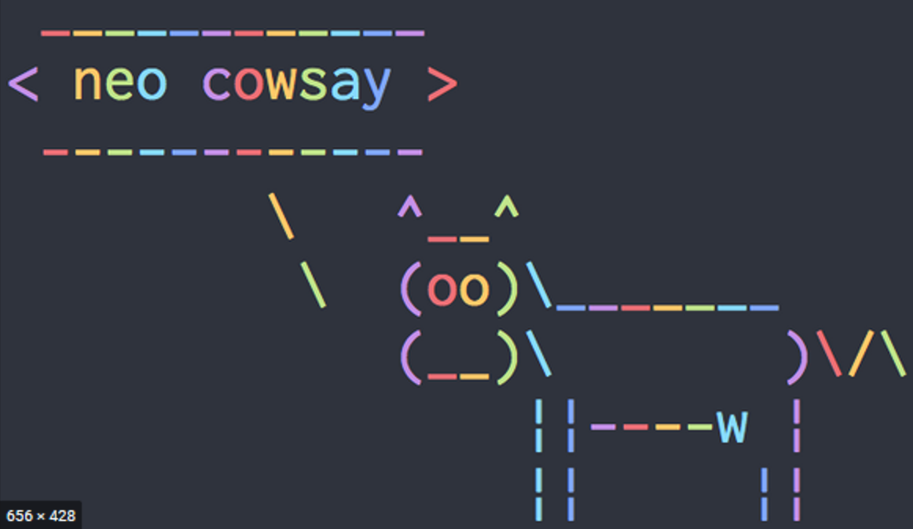
sudo apt install figlet toilet
figlet oeasy
#查询所有的小动物
#都在
cowsay -l
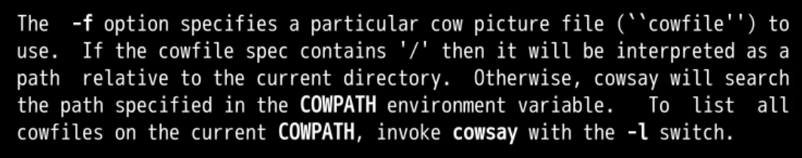
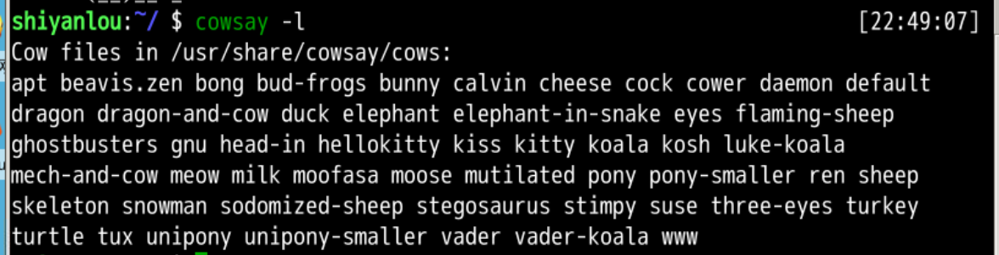
cowsay -f duck "不必"
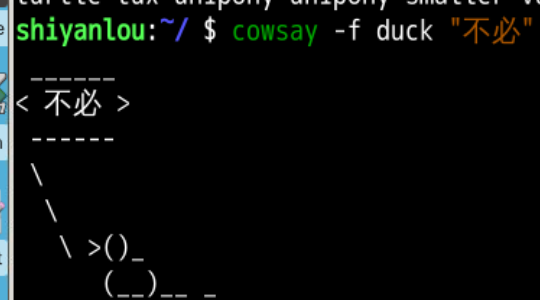
figlet "oeasy"
figlet "oeasy" | cowsay -f moose -n
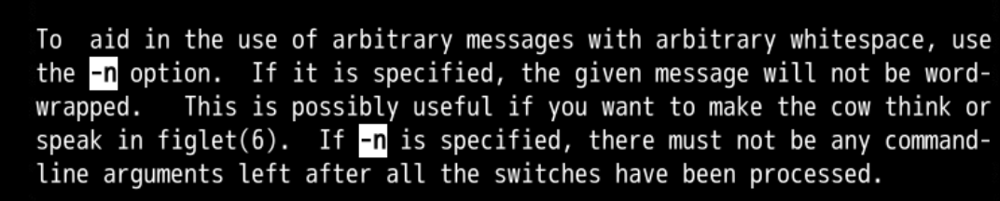
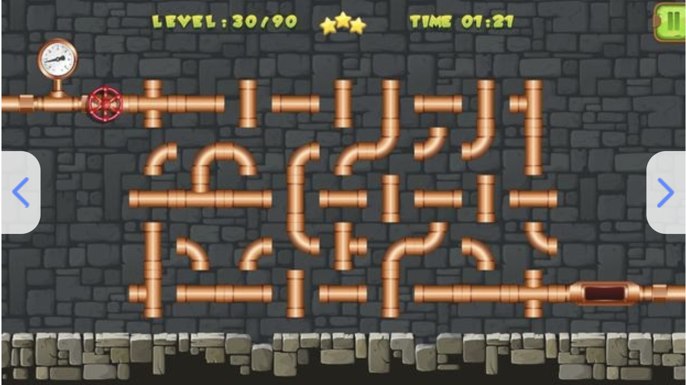
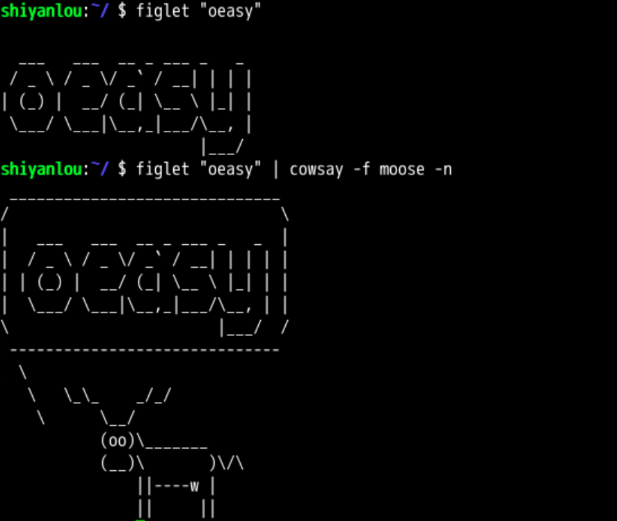
中间的那条竖线 | （在键盘回车上面）, 就是 pipe
现在给他加了一个管道|
#这样就可以更新系统，并且不用反复输入yes了
yes | sudo apt install cowsay
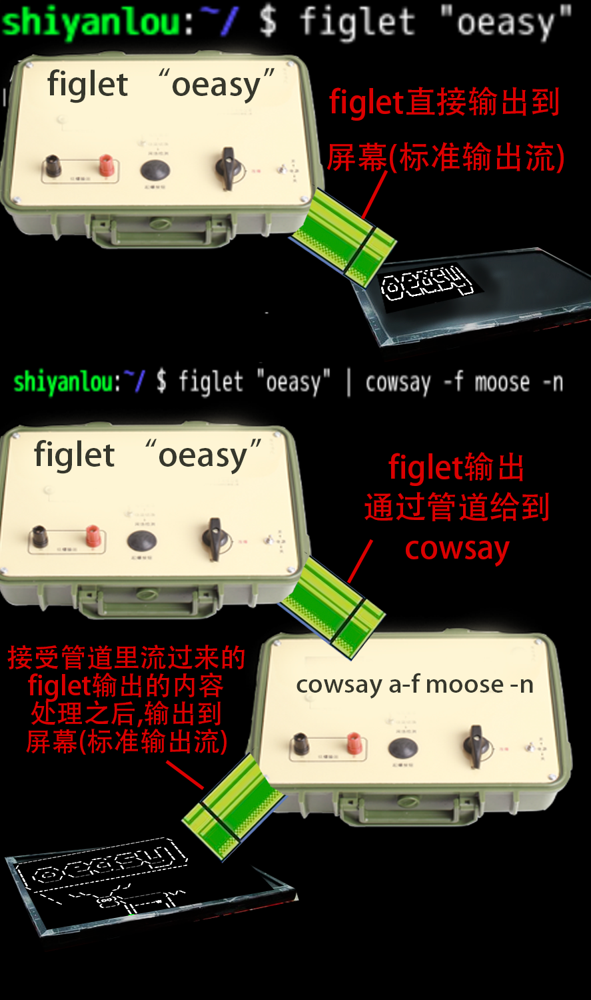
toilet --gay oeasy | cowthink -n
#牛说 uname
uname | cowsay -f moose -n
# 牛说 pwd, 把 pwd 的结果给到 cowsay
pwd | cowsay -f moose -n
# 牛说 ls, 把 ls 的结果给到 cowsay
ls | cowsay -f moose -n
# 牛说 ls /etc, 把 ls /etc 的结果给到 cowsay
ls etc | cowsay -f moose -n
# 把 cowsay 的内容输出到 toilet 染色
cowsay -f moose "oeasy" | toilet --gay -f term
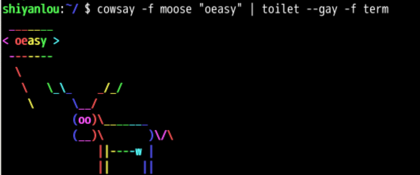
#首先要下载boxes
sudo apt install boxes
figlet oeasy | boxes -d peek -pa2t0b0
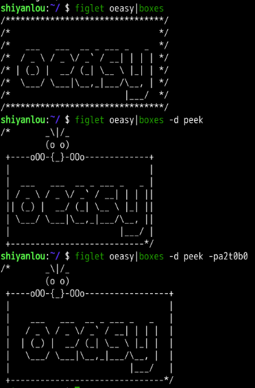
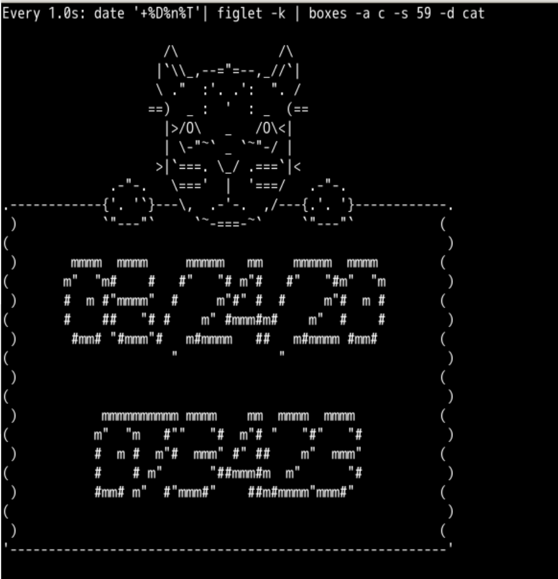
watch -n1 "date '+%D%n%T'| figlet -k | boxes -a c -s 59 -d cat"